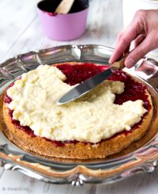
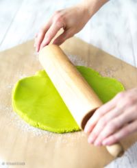
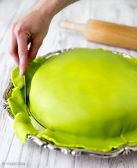
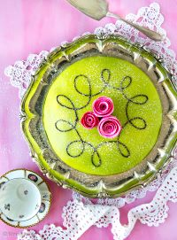

Prinsessakakku on juhlava herkku, jossa yhdistyvät pehmeä kakkupohja, vaniljakastike, vadelmahilloa ja marsipaani. Täydellinen juhlahetkiin!
Ainekset
Pohja:
- 4 munaa
- 1 ½ dl sokeria
- 2 dl vehnäjauhoja
- 1 tl leivinjauhetta
Täyte:
- 2 dl vaniljakastiketta
- 2 dl vadelmahilloa
- 3 dl vispikermaa
- 200 g marsipaania (vihreä)
Valmistusohjeet
1. Tee kakkupohja kuten täytekakun pohja.
2. Leikkaa jäähtynyt kakku kolmeen osaan.
3. Levitä pohjalle vadelmahilloa, seuraavaan kerrokseen vaniljakastiketta.
4. Vatkaa kerma ja levitä kakun päälle.
5. Kauli marsipaani ohuesti ja peitä kakku. Koristele tomusokerilla.
Vaiheittaiset kuvat



